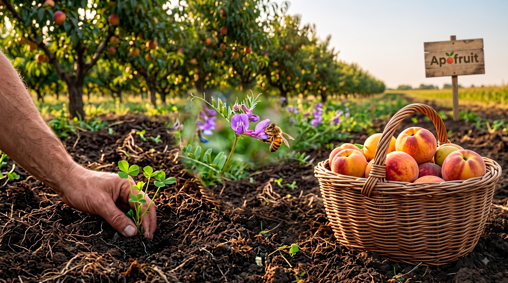
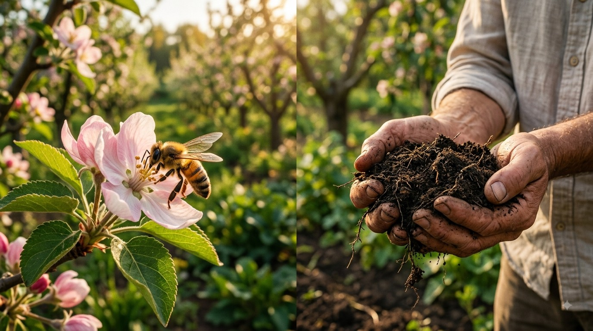
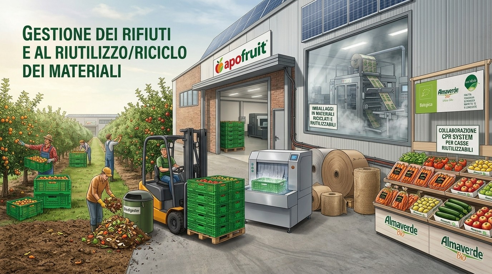

Preservazione della biodiversità e del suolo
La biodiversità rappresenta un elemento chiave per la sostenibilità ambientale e produttiva di Apofruit, che riconosce il proprio ruolo nel contribuire al mantenimento degli equilibri ecologici e nella protezione delle risorse naturali. Tali impegni non solo hanno una valenza ambientale, ma rappresentano anche un fattore strategico per il modello di business di Apofruit, che si fonda sulla qualità e continuità della produzione, strettamente legate alla salute degli ecosistemi agricoli.
Impatti, Rischi e Opportunità (SBM-3)
Apofruit contribuisce positivamente alla preservazione della biodiversità attraverso il ripristino degli ecosistemi, offrendo consulenza agronomica alle imprese socie per migliorare le pratiche agricole e promuovere una gestione sostenibile delle risorse naturali. Inoltre, l’Azienda diffonde buone pratiche di gestione del suolo, favorendo l’adozione di tecniche che migliorano la qualità del terreno e preservano la salute degli ecosistemi.

Nell’ambito dell’analisi di materialità, Apofruit ha identificato due impatti rilevanti legati alla biodiversità e agli ecosistemi:
- Fattori di impatto diretto sulla perdita di biodiversità: Un impatto positivo collegato al ripristino degli equilibri ecosistemici attraverso la consulenza agronomica alle imprese socie
- Impatti sull’estensione e sulla condizione degli ecosistemi: Un impatto positivo riguardante la diffusione delle buone pratiche di gestione del suolo verso le imprese socie.
Politiche Connesse (E4-2)
Nel Codice Etico si specifica che la Cooperativa, quale Organizzazione di produttori, ha come obiettivo l’impiego di pratiche colturali, tecniche di produzione e pratiche di gestione dei rifiuti che rispettino l’ambiente, in particolare per preservare la qualità dell’ambiente circostante, del paesaggio e preservare o favorire la biodiversità.
L’impegno della Cooperativa si concentra in particolare sul supporto ai produttori nel ripristino e sulla tutela della biodiversità nelle aree coltivate, promuovendo pratiche agricole sostenibili e adattate alle caratteristiche dei singoli contesti produttivi, anche sulla spinta delle certificazioni.
Azioni e Risorse (E4-3)(E4-2)
Apofruit è da sempre impegnata nella tutela della sostenibilità ambientale, è per questo che promuove un’agricoltura sostenibile che supporti la biodiversità
Di seguito principali azioni adottate:
- Gestione sostenibile del suolo: Apofruit supporta le imprese socie nel far adottare pratiche che variano in base alle caratteristiche fisico-tecniche del terreno, utilizzando sostanze organiche e favorendo tecniche agricole poco invasive.
- Diffusione del BiologicoNelle coltivazioni frutticole, l’adozione di tecniche specifiche favorisce una maggiore autonomia delle piante, riducendo così il ricorso a input esterni.
- Autonomia delle piante e riduzione degli input: La Cooperativa incoraggia l’applicazione delle migliori pratiche biologiche anche in ambiti convenzionali. Attualmente, oltre il 25% delle superfici coltivate dai soci è condotto secondo il metodo biologico, contribuendo in modo significativo alla conservazione della biodiversità agricola
- Consulenza e controllo: La Cooperativa fornisce consulenza agronomica diversificata e ha adottato protocolli interni per limitare l’impiego di sostanze potenzialmente dannose per la salute umana e per l’ambiente nei prodotti conferiti
Il Contesto Territoriale: In Emilia-Romagna, il tessuto agricolo è composto da aziende medio-piccole con colture diversificate e una buona presenza di aree verdi; un modello che favorisce la tutela della biodiversità e che si differenzia dalle monocolture tipiche di altre zone (es. Lazio o Spagna). Quando le pratiche agricole sono applicate correttamente, l'azienda non riscontra impatti negativi su suolo, aria o risorse idriche.
Economia Circolare (ESRS E5)
Apofruit riconosce l’importanza di un utilizzo più efficiente delle risorse e della riduzione degli sprechi come elementi centrali per migliorare la sostenibilità delle proprie attività.
L’impresa ha avviato iniziative volte a ottimizzare l’impiego di materie prime vergini, migliorare l’efficienza dei processi produttivi e contenere l’impatto ambientale legato ai materiali utilizzati, con particolare attenzione alla gestione dei rifiuti e al riutilizzo/riciclo dei materiali. Queste azioni rappresentano una leva strategica per l’efficienza operativa e la competitività nel lungo periodo.

Impatti, Rischi e Opportunità
Nell’ambito dell’analisi di materialità, l'azienda ha identificato i seguenti impatti positivi rilevanti:
- Afflussi di risorse: Efficienza nell’uso di materie prime vergini nell’approvvigionamento di materiali.
- Deflussi di risorse: Contributo concreto alla transizione verso un modello circolare.
- Rifiuti:
- Riciclo dei rifiuti dal ciclo produttivo per la creazione del packaging.
- Valorizzazione del recupero dei prodotti invenduti attraverso la destinazione a biodigestori, riducendo lo spreco alimentare.
L’analisi ha inoltre individuato due rischi materiali chiave:
- Aumento imprevisto dei costi del packaging, legato alla fluttuazione della materia prima o a modifiche normative sull’uso di alcuni materiali.
- Aumento dei costi di gestione operativa per far fronte alle richieste di materiali sostenibili provenienti dai clienti e dal mercato.
Non si sono rilevate invece opportunità rilevanti in questo specifico ambito.